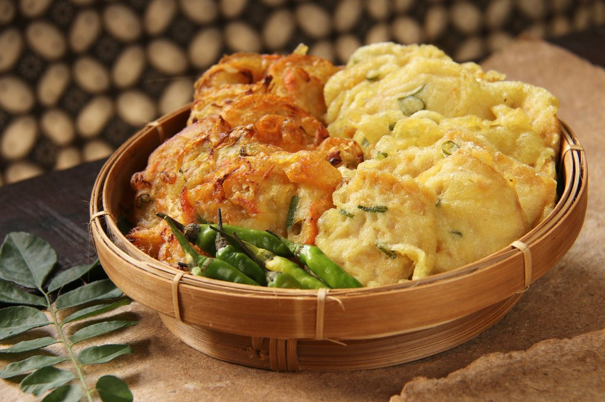

Gorengan
A fritter is a portion of meat, seafood, fruit, vegetables or other ingredients which have been battered or breaded, or just a portion of dough without further ingredients, that is deep-fried. Fritters are prepared in both sweet and savory varieties. Wikipedia